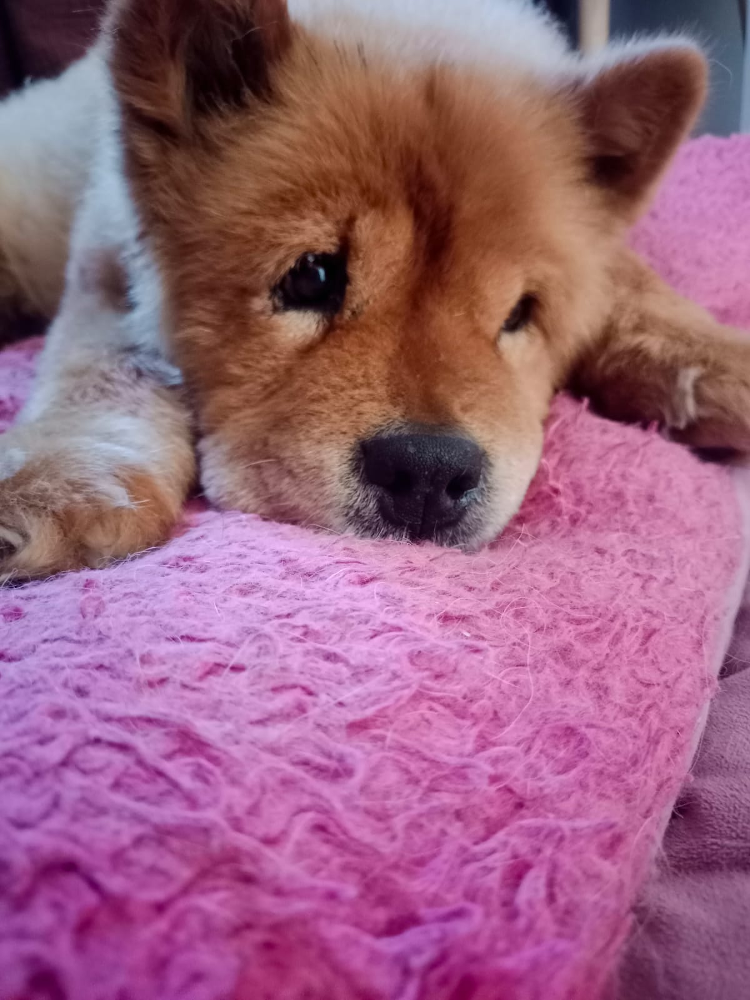
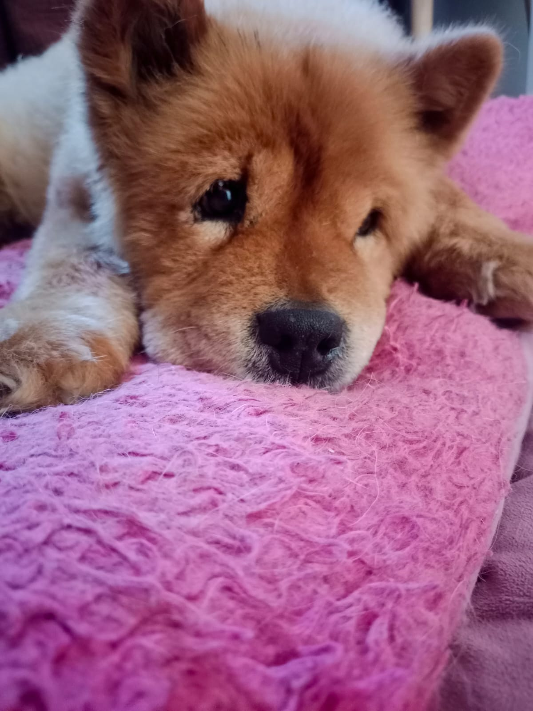

Profesional que le gustan los perros y hacer mucho deporte. Le encantan los cafecitos y conversar de cosas interesantes, por ahí también le gusta mucho leer.
Experiencia en análisis de datos y gestión de operaciones para proyectos en salud.